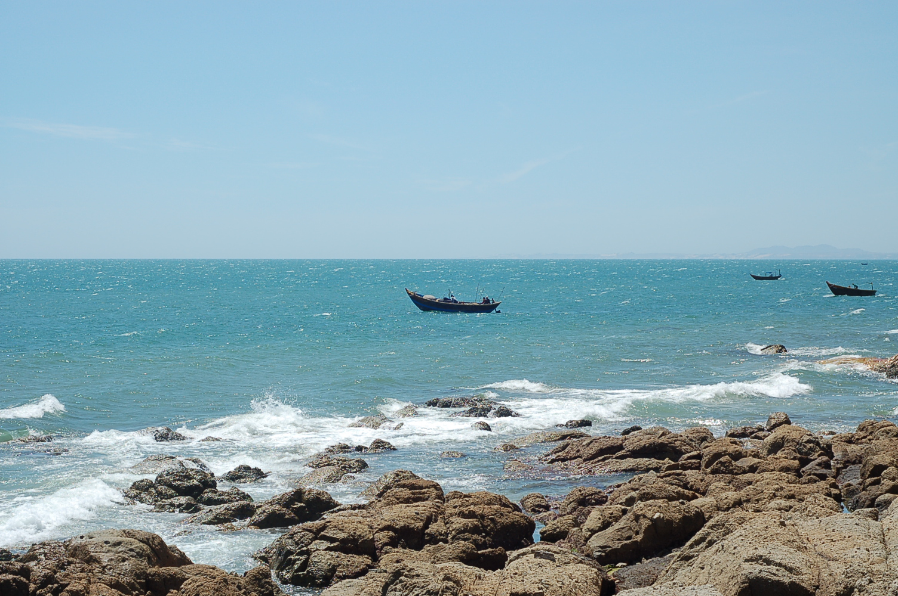
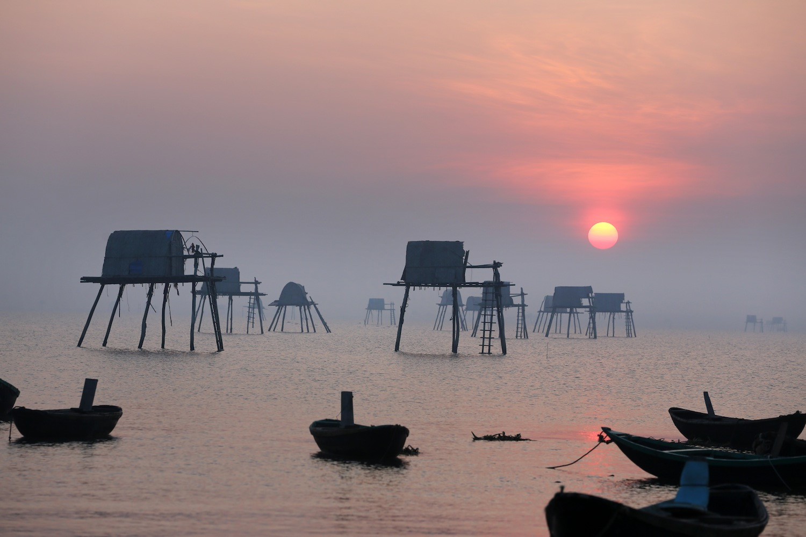

Thời gian: 02 NGÀY/01 ĐÊM - Phương tiện: ÔTÔ
Biển Đồng Châu thuộc huyện Tiền Hải, cách thành phố Thái Bình 35km theo tỉnh lộ đi Kiến Xương - Tiền Hải. Đến với khu du lịch biển Đồng Châu, du khách sẽ được tận hưởng bầu không khí trong lành của biển, của bãi tắm luôn lộng gió. Khu du lịch bao gồm bờ biển thuộc xã Đông Minh; Cửa Lân; hai đảo biển Cồn Thủ và Cồn Vành. Diện tích toàn khu du lịch rộng hàng chục km2, trung tâm của khu du lịch là bãi biển Đồng Châu dài 5km, nơi đây đã hình thành hệ thống các khách sạn, nhà nghỉ cao tầng phục vụ du khách đến với Đồng Châu tắm biển, nghỉ dưỡng. Điều thú vị là từ bãi tắm Đồng Châu, du khách có thể đi tàu, xuồng gắn máy ra thăm và tắm biển ở Cồn Thủ, Cồn Vành. Cách đất liền 7km, Cồn Thủ và Cồn Vành nổi lên như hai ngọn sóng xanh giữa biển khơi.
Một số lưu ý và quy định chung:
Giá Bao gồm:
Ngày 01: Hà Nội – Biển Đồng Châu (Ăn trưa, tối)
06h30: Xe và HDV OPENTOUR đón Quý khách tại điểm hẹn khởi hành đi Thái Bình, quý khách nghỉ ngơi, tự do ăn sáng tại thị xã Phủ Lý - điểm dừng chân cho khách du lịch thưởng thức bánh cuốn trả …
11h00: Đến Biển Đồng Châu. Quý khách nhận phòng khách sạn, nghỉ ngơi. Quý khách có thể thưởng thức cảm giác mát lạnh, lộng gió quanh hàng dừa, hàng dương xanh bát ngát hoặc tắm biển tại bãi biển Đồng Châu, bãi biển với vẻ đẹp hoang sơ.
12h00: Ăn trưa, nghỉ ngơi tại khách sạn
14h00: Quý khách tự do đi tàu, xuồng gắn máy ra thăm và tắm biển ở Cồn Thủ và Cồn Vành, hai cồn cát rộng với rừng thông và phi lao xanh ngát.
Ngày 02: Biển Đồng Châu – Hà Nội (Ăn sáng, trưa)
5h30: Quý khách dậy sớm ngắm mình minh lên, phóng tầm mắt ngắm nhìn biển Đồng Châu trong sương sớm … Sau đó, quý khách dùng bữa sáng tại nhà hàng khách sạn
8h00: Hướng dẫn viên đưa quý khách tham quan mua sắm hải sản.
11h30: Quý khách dùng bữa trưa tại nhà hàng
13h30: Quý khách làm thủ tục trả phòng khách sạn
14h00: Xe đưa Quý khách đi tham quan làng vườn Bách Thuận, một trong những làng cổ tiêu biểu cho vùng quê ở đồng bằng bắc bộ, nơi có hàng trăm các loại cây xanh, tham quan chùa Từ Vân, chùa Bách Tính ...
16h30: Xe khởi hành đưa quý khách trở về Hà Nội, trên đường đi xe có dừng chân nghỉ ngơi tại Tx Phủ Lý.
18h30: Về đến Hà Nội. Hướng dẫn OPENTOUR chia tay quý khách. Kết thúc chương trình. Hẹn gặp lại quý khách trong hành trình tiếp theo
